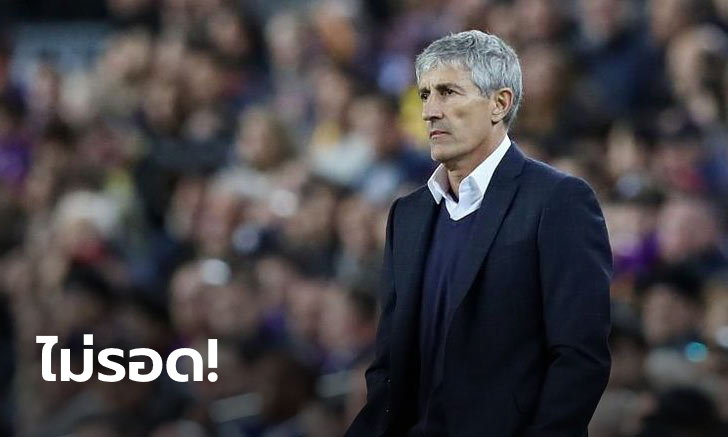
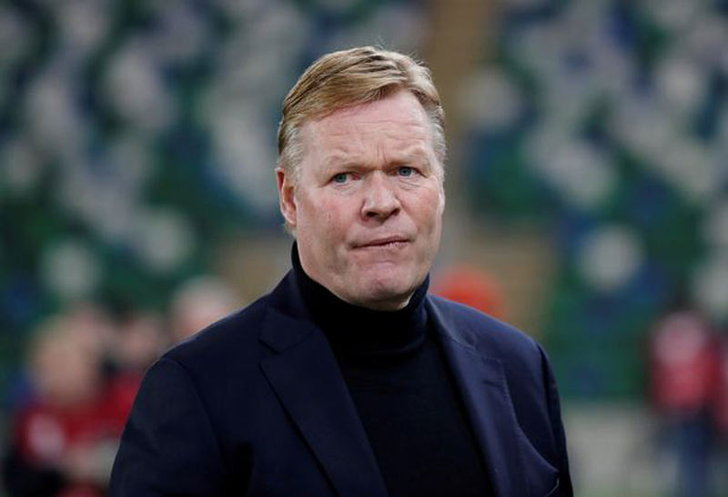
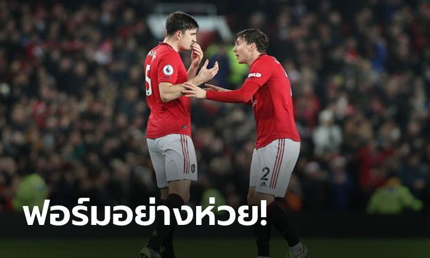
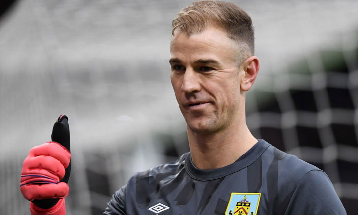

ภูผาหิน! "ปิแรส" เผยชื่อ "2 กองหลังคู่แข่ง" ที่ดวลยากสุดในชีวิต
โรแบร์ ปิแรส ตำนานปีกอาร์เซน่อล ยกย่อง จอห์น เทอร์รี และ ริโอ เฟอร์ดินานด์ อดีตเซนเตอร์แบ็กของเชลซี และ แมนเชสเตอร์ ยูไนเต็ด ว่าเป็นคู่แข่งที่ดวลด้วยยากสุดสมัยที่ยังโลดแล่นในสนาม
"เทอร์รีและเฟอร์ดินานด์เป็นคู่ต่อสู้ที่ยากมาก พวกเขาแข็งแกร่งสุดๆเลย"
"การย้ายจากฝรั่งเศสเพื่อมาเล่นในพรีเมียร์ลีกเป็นการเริ่มต้นที่ยากลำบากจริงๆ อาร์แซน เวนเกอร์บอกกับผมว่า 'มันไม่ใช่ฟุตบอลที่เหมือนกัน มันคือเรื่องของกายภาพ นายต้องเรียนรู้' ผมจำได้ดีเลย"
"เกมแรกของผมคือไปเยือนซันเดอร์แลนด์ ผมเป็นตัวสำรองและหลังผ่านไป 20-25 นาที ผมคิดในใจว่า 'โอ้ นี่ไม่ใช่เกมฟุตบอลของฉัน' การเล่นในพรีเมียร์ลีกไม่ง่ายเลย" อดีตแข้งวัย 46 ปีกล่าว
ไม่ทน! ต่างดาวสั่งปลด "เซเตียน" พ้นกุนซือ, คาด "คูมัน" โดดเสียบแทน

บาร์เซโลนา แถลงผ่านเว็บไซต์อย่างเป็นทางการของสโมสรเรื่องการแยกทางกับกุนซืออย่าง กีเก้ เซเตียน หลังล้มเหลวทุกภารกิจในฤดูกาลล่าสุด
ถือเป็นการประกาศอย่างเป็นทางการจากสโมสรดังจากกาตาลัน หลังมีข่าวลือหนาหูในช่วงที่ผ่านมาว่าทีมกำลังพิจารณาเกี่ยวกับอนาคตของกุนซือวัย 61 ปีที่พาทีมตกรอบก่อนรองชนะเลิศ ยูฟ่า แชมเปี้ยนส์ ลีก แบบเละเทะด้วยการพ่ายแพ้ บาเยิร์น มิวนิค 2-8
โดยเมื่อวันจันทร์ที่ผ่านมา อาซูลกราน่า ออกแถลงการณ์อย่างเป็นทางการว่าได้สั่งปลด เซเตียน ออกจากการทำหน้าที่เทรนเนอร์ใหญ่ของทีม แม้ว่าเพิ่งจะเข้ามารับงานกุนซือไปเมื่อวันที่ 13 มกราคมที่ผ่านมาก็ตาม
ทั้งนี้ แถลงการณ์ของ เจ้าบุญทุ่ม ยังได้เผยต่อไปว่าตอนนี้สโมสรกำลังพิจารณาและหารือถึงการเลือกตัวกุนซือคนใหม่ และน่าจะมีการประกาศในอีกไม่กี่วันหลังจากนี้
สำหรับสถิติของ เซเตียน ในช่วงที่ผ่านมาเขาพาทีมลงเล่นไปทั้งหมด 25 นัดในทุกรายการ โดยแบ่งออกเป็นชนะ 16 เสมอ 4 และแพ้ 5 นัด แต่สาเหตุสำคัญของการโดนปลดคือการพาทีมพลาดแชมป์ทุกรายการ โดยเฉพาะในลา ลีกา ที่โดน เรอัล มาดริด แซงเข้าวิน และ แชมเปี้ยนส์ ลีก ที่แพ้คู่แข่งแบบเละเทะ
ทั้งนี้ คนที่จะเข้าเป็นกุนซือคนใหม่ สื่อต่างประเทศคาดว่าคงหนีไม่พ้น โรนัลด์ คูมัน เฮดโค้ชทีมชาติเนเธอร์แลนด์ ที่กำลังว่างเนื่องจากไม่มีโปรแกรมทีมชาติลงแข่งขัน และเจ้าตัวเคยเป็นนักเตะในถิ่นคัมป์นูมาแล้วช่วงปี 1989-1995 ซึ่งการประกาศตัวกุนซือคนใหม่จะเกิดขึ้นในอีกไม่กี่วันข้างหน้าตามที่สโมสรแถลงการณ์
เปลี่ยนเดี๋ยวนี้! "สโคลส์" ย้ำชัด "ลินเดอเลิฟ" ไม่เก่งพอเป็นคู่หูของ "แม็คไกวร์"
พอล สโคลส์ ยอดตำนานทีม แมนเชสเตอร์ ยูไนเต็ด ยืนยันว่า วิคเตอร์ ลินเดอเลิฟ ยังไม่ดีพอจะเล่นเป็นคู่หูของ แฮร์มี แม็คไกวร์ ฉะนั้นจึงอยากให้สโมสรรักซื้อแข้งระดับโลกเข้ามาเพิ่มด่วน
"หากใครจำได้จะรู้ว่าผมเคยพูดไว้นานแล้วเกี่ยวกับการซื้อกองหลังระดับโลกเข้ามาเพิ่มอีก เพราะแค่ แฮร์รี แม็คไกวร์ คนเดียวยังไม่พอหรอก" มัจจุราชผมแดงเพลิง กล่าวกับ BT Sport
"ผมไม่แน่ใจจริง ๆ ว่า ลินเดอเลิฟ จะเก่งขึ้นจนสามารถยืนเป็นคู่หูที่ไว้ใจได้สำหรับ แม็คไกวร์ รึเปล่า บางทีมันอาจไม่มีวันเกิดขึ้นจริง ฉะนั้นเราจึงต้องซื้อตัวท็อปคนอื่นเข้ามาแทนเดี๋ยวนี้"
"ลินเดอเลิฟ ยังคงเป็นนักเตะที่ดีอยู่เหมือนเดิม แถมสถิติการป้องกันปากประตูของเขายังน่าทึ่งสุด ๆ ด้วยโดยเฉพาะ 15-20 นัดหลังสุด แต่สำหรับตำแหน่งคู่หูของ แม็คไกวร์ คุณจำเป็นต้องทำให้ได้ดีกว่านั้นเพื่อกลบจุดอ่อนให้กันและกันอย่างสมบูรณ์"
โซเซียดาด คว้า "ซิลบา" ร่วมทีม 2 ปี
เรอัล โซเซียดาด แถลงผ่านเว็บไซต์อย่างเป็นทางการของสโมสรเรื่องการคว้าตัว ดาบิด ซิลบา มาเสริมทัพ โดยเซ็นสัญญาจนถึงปี 2022
กองกลางชาวสเปนเพิ่งตกลงแยกทางกับ แมนเชสเตอร์ ซิตี้ สโมสรที่ใช้เวลามานานกว่า 10 ปี ซึ่งเขาประสบความสำเร็จมากและกลายมาเป็นหนึ่งในตำนานที่ยิ่งใหญ่ของสโมสร
โดยเมื่อคืนวันจันทร์ที่ผ่านมาสโมสรเรอัล โซเซียดาด ในเวที ลา ลีกา สเปน ได้ประกาศว่าพวกเขาตกลงคว้าตัว ซิลบา ไปครองด้วยสัญญา 2 ปี พร้อมกับรับเสื้อหมายเลข 21 ซึ่งเป็นเบอร์โปรด
ก่อนหน้านี้อนาคตของมิดฟิลด์วัย 34 ปีถือเป็นที่พูดถึงอย่างมากเพราะมีทั้งสโมสรใน อิตาลี, สหรัฐฯ และ สเปน แสดงความสนใจดึงไปใช้งานแม้ว่าตอนนี้จะอยู่ในช่วงปลายอาชีพแล้วก็ตาม
อย่างไรก็ตาม ท้ายที่สุดกลายเป็น เรอัล โซเซียดาด ที่ได้ตัวกองกลางเชิงสูงรายนี้ไปครองแทน โดยนักเตะพร้อมลงสนามเพื่อช่วยต้นสังกัดใหม่บนเวที ลา ลีกา
สำหรับศึกลาลีกา สเปน จะเปิดฉากฤดูกาลใหม่ 2020-21 ในวันที่ 12 กันยายน นี้ ซึ่ง ซิลบา พร้อมลงสนามรับใช้ต้นสังกัดใหม่ทันที
สเปอร์ส จ่อเซ็นฟรี "โจ ฮาร์ท" เฝ้าเสา
โจ ฮาร์ท ผู้รักษาประตูจอมเก๋า จ่อย้ายมาร่วมทีม ท็อตแน่ม ฮอทสเปอร์ เหลือเพียงการประกาศเซ็นสัญญาอย่างเป็นทางการ ตามรายงานเมื่อวันจันทร์ที่ 17 สิงหาคม
จอมหนึบวัย 33 ปี แยกทางกับ เบิร์นลี่ย์ หลังจบฤดูกาลที่ผ่านมา โดยก่อนหน้านี้เป็นข่าวกับ เซลติก, ลีดส์, แบล็คเบิร์น โรเวิร์ส และ ดาร์บี้ เคาน์ตี้ ก่อนที่เขาจะตกลงย้ายมาร่วมถิ่นนอร์ท ลอนดอน เพื่อเป็นนายทวารแบ็กอัพให้กับ อูโก้ โยริส ผู้รักษาประตูมือหนึ่งทีมชาติฝรั่งเศส
สเปอร์ เจอปัญหาโควต้าโฮมโกรว์น มีอยู่ในทีมเพียง 4 คนเท่านั้น บวกกับโควต้านักเตะต่างชาติที่สามารถส่งได้มากสุด 17 คน ทำให้มีนักเตะลงเตะพรีเมียร์ลีกได้เพียง 21 ทั้งที่ส่งได้ 25 คน
การได้ ฮาร์ท เข้ามาก็ทำให้ มูรินโญ่ มีตัวเลือกสำหรับนักเตะโฮมโกรว์น อันหมายถึงคนที่ลงทะเบียนกับสโมสรที่อยู่ในความดูแลของสมาคมฟุตบอลอังกฤษ และเวลส์ ก่อนอายุ 21 ปี เป็นเวลา 3 ฤดูกาล เพิ่มขึ้น
อย่างไรก็ตาม อดีตนายทวารแมนฯ ซิตี้ ต้องยอมรับการลดค่าเหนื่อยของตัวเอง จากที่รับกับ เบิร์นลี่ย์ 50,000 ปอนด์ต่อสัปดาห์